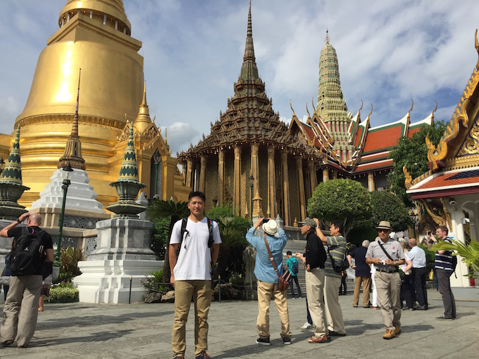

Bangkok
My first stop in Thailand was the Bangkok, the capital of Thailand. There were many historic temples scattered around Bangkok. My goal was to visit as many as I could in two days. I managed to hit about six different temples!
My first stop in Thailand was the Bangkok, the capital of Thailand. There were many historic temples scattered around Bangkok. My goal was to visit as many as I could in two days. I managed to hit about six different temples!
A little less than 45 minutes on bus from Bangkok was the Ampawa Floating Market. Here vendors lined up along the river selling all kinds of trinkets. I had dinner on a floating boat anchored to the side of the river!
I flew to the rural city of Chiang Mai, a two hour flight north of Bangkok. It was here I rode on the longest zipline in Thailand! At the Flight of the Gibbon!
After Chaing Mai, I flew to Phuket, one of the most popular tourist locations in Thailand. Here I went on many different tours of the surrounding islands. One of my most memorable moments was diving into the water from the second deck of the boat I was on.
A few hours bus ride away from Phuket was the less well known Krabi. I took a miniboat to another island next to Krabi and entered a pitch dark cave filled with bats, birds, and other creatures. Using only the light from my phone, I climbed to the top of the cave and saw another boat approaching the island.